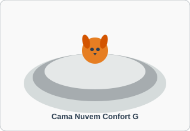

1.1. Cama Nuvem Confort Ortopédica para Cães e Gatos (Tamanho G)

Descrição Completa: Projetada ergonomicamente em formato circular para simular a sensação de aconchego materno. O enchimento macio e denso em fibra siliconada alivia pontos de pressão muscular e articular, promovendo um sono reparador para pets idosos ou com displasia.
- Material de Fabricação:
- Pelúcia antialérgica de pelo longo sintético (100% poliéster) e base em tecido oxford impermeável.
- Dimensões e Peso:
- Diâmetro total: 80 cm | Altura da borda: 20 cm | Peso aproximado: 1,8 kg.
- Recomendação de Porte:
- Cães de porte médio a grande (ex: Golden Retriever filhote, Cocker, Bulldog, Beagle) ou 2 gatos adultos.
- Manutenção:
- Capa com fecho em zíper reforçado para lavagem em máquina no ciclo delicado.
Valor Unitário: R$ 149,90
Disponibilidade: Pronta entrega na loja física ou entrega via delivery parceiro.